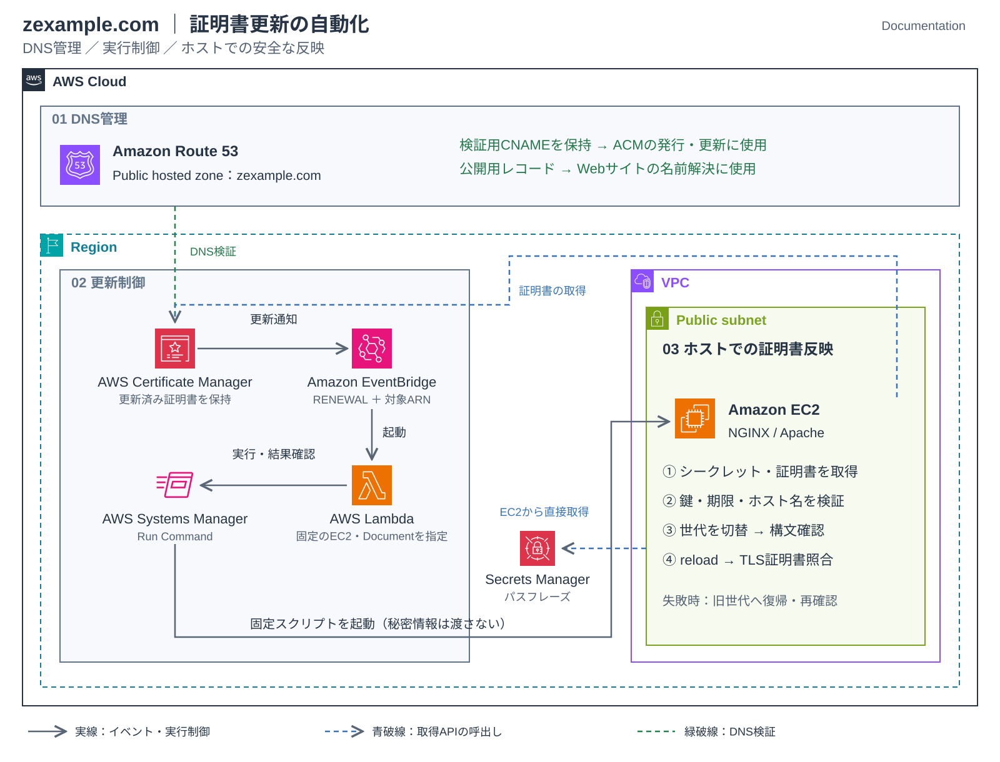

ACM証明書の自動更新とEC2への自動反映
Route 53で管理するzexample.comのACM証明書について、更新イベントを起点にEC2上のWebサーバーへ反映する構成を整理する
DNS検証、EventBridge・Lambda・Systems Managerの処理、反映確認と障害時の対応をまとめる
1. 全体構成

構成図を選択すると拡大表示できる
実線はイベントと処理の流れを示し、EventBridgeのイベントに証明書や秘密鍵の実体を含める意味ではない
ACMが証明書を更新しても、EC2上のファイルは自動では差し替わらない
更新済み証明書の取得、ファイル配置、Webサーバーの再読み込み、接続確認までを自動化の対象とする
掲載する実装例では、秘密情報をコマンド履歴に渡さないため、LambdaではなくEC2が証明書とパスフレーズを直接取得する
2. Route 53と証明書の前提
| No. | 項目 | 設定・確認内容 |
|---|---|---|
| 1 | ドメイン管理 | Route 53のパブリックホストゾーンでzexample.comを管理するドメインの委任先NSがホストゾーンと一致していることを確認する |
| 2 | 公開先の名前解決 | EC2へ直接公開する構成ではAレコードなどを実際の公開先に合わせる EC2を指すAレコードと、証明書検証用のCNAMEレコードを混同しない |
| 3 | 証明書 | 対象のホスト名を含む、エクスポート可能なACMパブリック証明書を使用するzexample.comとwww.zexample.comの両方を使用する場合は、両方が証明書の対象に含まれることを確認する |
| 4 | DNS検証 | ACMが提示する検証用CNAMEをRoute 53へ登録し、発行後も保持する 公開先IPの変更だけを理由に検証用CNAMEを削除しない |
| 5 | 更新対象 | 発行後または前回更新後のエクスポートなど、ACMのマネージド更新条件を満たすことを確認する ACMへインポートした証明書はマネージド更新の対象外となる |
| 6 | EC2の管理 | SSM Agent、インスタンスプロファイル、必要なAWSエンドポイントへの通信を用意する Public subnetに配置するだけではRun Commandを使用できない |
初回発行・手動配置は証明書更新（ACMエクスポート）を参照する
エクスポート可能なパブリック証明書には発行・更新の料金があるため、導入時に料金と対象ドメイン数を確認する
3. 自動反映の処理
- ACMによる証明書更新と、更新済み証明書が利用可能になったことを示すイベントの発行
- EventBridgeで対象の証明書ARNと更新イベントを絞り込み、Lambdaを起動
- Lambdaでイベントの対象を検証し、固定のSSMドキュメントを指定EC2で実行
- EC2のインスタンスロールでSecrets ManagerとACMへアクセスし、パスフレーズと更新済み証明書・証明書チェーン・暗号化秘密鍵を取得
- EC2で候補ファイルを検査し、配置・構文確認後にWebサーバーを再読み込み
- 対象EC2ごとのRun Command結果と、HTTPS接続で提示される証明書を確認
ACMの更新では証明書ARNを維持するため、ARNが同じでも証明書の内容は変わる
反映済みの判定には有効期限やSHA-256フィンガープリントを使用する
3.1. EventBridgeの絞り込み
更新だけを対象とするルール例を示すACM Certificate Availableには初回発行なども含まれるため、Actionと証明書ARNを指定する
{
"source": ["aws.acm"],
"detail-type": ["ACM Certificate Available"],
"resources": ["<CERTIFICATE_ARN>"],
"detail": {
"Action": ["RENEWAL"],
"CertificateType": ["AMAZON_ISSUED"]
}
}このルールでは初回発行を処理しないため、初回配置は別途実施する
Lambda側でも許可した証明書と配布先の対応を確認し、同じ更新の再実行で不要な再読み込みを行わないようにする
4. 権限と秘密情報の扱い
| 対象 | 設計・確認内容 |
|---|---|
| Lambda | 指定EC2と固定SSMドキュメントへのコマンド送信、実行結果の取得に制限する 証明書のエクスポート権限やシークレットの読取り権限は付与しない |
| EC2 | Systems Managerに必要な権限と通信、対象証明書のエクスポート、対象シークレットの取得権限を付与する 長期アクセスキーを配置せず、インスタンスロールを使用する |
| パスフレーズ・秘密鍵 | ソースコード、環境変数への平文固定、Run Commandのコマンド文字列やログへ埋め込まない Base64化は暗号化ではなく、秘密情報の保護にはならない |
| 配置先・一時ファイル | 所有者・アクセス権を限定し、作業用ディレクトリは他ユーザーから読めないようにする 秘密鍵、復号用ファイル、旧世代の保管・削除方法も定める |
| 完了判定 | SendCommandの受付成功だけで完了としない対象ごとの実行結果と、公開先が提示する証明書まで確認する |
以下はこのページ用に作成した実装例であり、既存環境の稼働コードを採取したものではない
実環境へは未デプロイのため、検証環境で正常系・異常系・切り戻しを確認してから適用する
5. 実装コード（展開形式）
各項目を選択するとコード全文を展開できる
Copyボタンでコピーでき、個別ファイルとしてもダウンロードできる
対象はLinuxのEC2 1台、証明書1枚、443番のNGINXまたはApache（httpd）とする
ALBでのTLS終端、Windows、複数台への一括反映はこのコードの対象外とする
| 配置先 | 設定・前提 |
|---|---|
| Lambda | ハンドラーはlambda_function.lambda_handler、タイムアウトは600秒に設定する環境変数に CERTIFICATE_ARN、INSTANCE_ID、SSM_DOCUMENT_NAME、SSM_DOCUMENT_VERSIONを設定する |
| SSMドキュメント | DeployAcmCertificateというCommandタイプのドキュメントとして登録するLambdaからはレビュー済みの数値バージョンを指定し、ドキュメントを変更できる管理者を制限する |
| EC2の実行環境 | Python 3.10以降、boto3、cryptography 42以降、OpenSSL、systemd、restoreconを用意する/opt/acm-renewal/venv/bin/pythonからライブラリを読み込めるようにし、スクリプトと親ディレクトリはrootのみ変更可能とする |
| EC2の設定 | host-config.jsonを/etc/acm-renewal.jsonへ配置し、root所有・600にする証明書ARNはLambda側と一致させ、 web_serverはnginxまたはhttpdを指定する |
| Secrets Manager | 対象シークレットのSecretStringに、passphraseキーを持つJSONを保存するパスフレーズそのものは設定ファイルやLambda環境変数へ書かない |
| 既存のHTTPS | 初回配置済みの有効な証明書が必要となる Webサーバーは current/fullchain.pemとcurrent/private.keyを参照し、127.0.0.1:443でも同じSNIの証明書を提示するようにする |
Lambda実行ロールには基本のログ出力権限を別途付与し、EventBridgeからLambdaを起動できるリソースベースポリシーを対象ルールARNに限定する
EC2ロールにはAmazonSSMManagedInstanceCore相当の権限を別途付与する
シークレットにカスタマーマネージドKMSキーを使用する場合は、そのキーのkms:Decryptとキーポリシーも確認する
ssm:GetCommandInvocationはリソース単位の指定に対応しないため、掲載ポリシーではこのアクションだけResource: "*"とする
コマンド送信先は対象EC2とSSMドキュメントのARNで制限する
① Lambda：更新イベントの検証・SSM実行・結果確認を展開
"""Example: one allowed certificate -> one EC2, with execution-result checking.
Handler: lambda_function.lambda_handler. Lambda timeout: 600 seconds.
No certificate, private key or passphrase is sent to Run Command.
"""
import os
import time
import boto3
from botocore.config import Config
from botocore.exceptions import ClientError
def lambda_handler(event, context):
certificate_arn = os.environ["CERTIFICATE_ARN"]
instance_id = os.environ["INSTANCE_ID"]
document_name = os.environ["SSM_DOCUMENT_NAME"]
document_version = os.environ["SSM_DOCUMENT_VERSION"]
arn_parts = certificate_arn.split(":", 5)
detail = event.get("detail", {})
if not (
event.get("source") == "aws.acm"
and event.get("detail-type") == "ACM Certificate Available"
and event.get("resources") == [certificate_arn]
and event.get("account") == arn_parts[4]
and event.get("region") == arn_parts[3]
and detail.get("Action") == "RENEWAL"
and detail.get("CertificateType") == "AMAZON_ISSUED"
):
return {"status": "ignored"}
if context.get_remaining_time_in_millis() < 540_000:
raise RuntimeError("Configure the Lambda timeout to 600 seconds")
ssm = boto3.client(
"ssm", region_name=arn_parts[3],
config=Config(connect_timeout=5, read_timeout=10,
retries={"mode": "standard", "total_max_attempts": 2}),
)
result = ssm.send_command(
InstanceIds=[instance_id],
DocumentName=document_name,
DocumentVersion=document_version,
Parameters={}, # Fixed document + root-owned host config, no secrets
TimeoutSeconds=60,
Comment="ACM renewal: deploy the configured certificate",
)
command_id = result["Command"]["CommandId"]
print({"command_id": command_id, "status": "submitted"})
deadline = time.monotonic() + 440
while time.monotonic() < deadline:
try:
invocation = ssm.get_command_invocation(
CommandId=command_id, InstanceId=instance_id,
)
except ClientError as error:
if error.response["Error"]["Code"] != "InvocationDoesNotExist":
raise
else:
status = invocation["Status"]
if status == "Success":
if invocation.get("ResponseCode") != 0:
raise RuntimeError(f"Unexpected response code: {command_id}")
print({"command_id": command_id, "status": "verified-on-host"})
return {"status": "verified-on-host", "command_id": command_id}
if status in {"Failed", "Cancelled", "TimedOut"}:
# Deliberately do not print command stdout/stderr or API payloads
raise RuntimeError(f"Run Command {status}: {command_id}")
time.sleep(5)
# A timed-out observer must not claim the host operation has been cancelled
raise RuntimeError(f"Result not confirmed; inspect Run Command: {command_id}")
② SSMドキュメント：EC2上の固定スクリプトを実行を展開
{
"schemaVersion": "2.2",
"description": "Deploy the certificate configured on this Linux host; no secret parameters",
"mainSteps": [
{
"action": "aws:runShellScript",
"name": "DeployCertificate",
"inputs": {
"timeoutSeconds": "300",
"runCommand": [
"#!/bin/sh",
"set -eu",
"test \"$(uname -s)\" = Linux",
"test \"$(id -u)\" = 0",
"exec /opt/acm-renewal/venv/bin/python /opt/acm-renewal/deploy_certificate.py"
]
}
}
]
}
③ EC2：取得・検証・世代切替・reload・切り戻しを展開
"""Linux/root example. Requires boto3 and cryptography>=42, OpenSSL, systemd.
Initialize /etc/pki/tls/acm-zexample/current with a working certificate first.
The web server must reference current/fullchain.pem and current/private.key.
"""
import hashlib
import json
import os
from pathlib import Path
import socket
import ssl
import stat
import subprocess
import sys
import time
import uuid
from datetime import datetime, timedelta, timezone
import boto3
from botocore.config import Config
from cryptography import x509
from cryptography.hazmat.primitives import serialization
BASE = Path("/etc/pki/tls/acm-zexample")
CONFIG = Path("/etc/acm-renewal.json")
SERVERS = {
"nginx": (["/usr/sbin/nginx", "-t"], "nginx"),
"httpd": (["/usr/sbin/httpd", "-t"], "httpd"),
}
def run(arguments):
# No shell, no inherited verbose logging, no secret in process arguments
subprocess.run(arguments, check=True, stdout=subprocess.PIPE,
stderr=subprocess.PIPE, timeout=15)
def private_root_path(path, directory=False):
info = path.lstat()
correct_type = stat.S_ISDIR(info.st_mode) if directory else stat.S_ISREG(info.st_mode)
if not correct_type or info.st_uid != 0 or info.st_mode & 0o077:
raise RuntimeError("Expected a root-owned private file/directory")
def write_file(path, contents):
# Parent is a new, root-only version directory
with path.open("xb") as handle:
os.chmod(path, 0o600)
handle.write(contents)
handle.flush()
os.fsync(handle.fileno())
def fingerprint(pem):
der = x509.load_pem_x509_certificate(pem).public_bytes(serialization.Encoding.DER)
return hashlib.sha256(der).hexdigest()
def validate_material(cert_pem, chain_pem, encrypted_key, passphrase, directory, hostname):
cert = x509.load_pem_x509_certificate(cert_pem)
now = datetime.now(timezone.utc)
if not cert.not_valid_before_utc <= now < cert.not_valid_after_utc - timedelta(days=1):
raise RuntimeError("Certificate is not currently usable")
key = serialization.load_pem_private_key(encrypted_key, password=passphrase)
public_format = serialization.PublicFormat.SubjectPublicKeyInfo
cert_public = cert.public_key().public_bytes(serialization.Encoding.DER, public_format)
key_public = key.public_key().public_bytes(serialization.Encoding.DER, public_format)
if cert_public != key_public:
raise RuntimeError("Certificate/key mismatch")
write_file(directory / "certificate.pem", cert_pem)
write_file(directory / "chain.pem", chain_pem)
write_file(directory / "fullchain.pem", cert_pem.rstrip() + b"\n" + chain_pem)
write_file(directory / "private.key", key.private_bytes(
serialization.Encoding.PEM, serialization.PrivateFormat.PKCS8,
serialization.NoEncryption(),
))
run(["/usr/bin/openssl", "verify", "-purpose", "sslserver",
"-verify_hostname", hostname, "-untrusted", str(directory / "chain.pem"),
str(directory / "certificate.pem")])
def served_fingerprint(hostname):
# Verifies the CA chain and hostname using SNI, without disabling TLS checks
context = ssl.create_default_context()
with socket.create_connection(("127.0.0.1", 443), timeout=5) as raw:
with context.wrap_socket(raw, server_hostname=hostname) as connection:
return hashlib.sha256(connection.getpeercert(binary_form=True)).hexdigest()
def wait_for_certificate(hostname, expected):
for _ in range(6):
try:
if served_fingerprint(hostname) == expected:
return
except (OSError, ssl.SSLError):
pass
time.sleep(2)
raise RuntimeError("Served certificate verification failed")
def switch_current(target):
temporary = BASE / (".next-" + uuid.uuid4().hex)
try:
temporary.symlink_to(target)
os.replace(temporary, BASE / "current")
finally:
temporary.unlink(missing_ok=True)
def activate(candidate, previous, test_command, service, hostname, new_fp, old_fp):
try:
switch_current(candidate)
# Restore inherited SELinux labels before the service reads the files
run(["/usr/sbin/restorecon", "-R", str(BASE)])
run(test_command)
run(["/usr/bin/systemctl", "reload", service])
wait_for_certificate(hostname, new_fp)
except Exception:
try:
switch_current(previous)
run(test_command)
run(["/usr/bin/systemctl", "reload", service])
wait_for_certificate(hostname, old_fp)
except Exception:
raise RuntimeError("Rollback not verified; manual recovery required") from None
raise RuntimeError("Deployment failed; previous certificate restored") from None
def deploy(config):
test_command, service = SERVERS[config["web_server"]]
current = BASE / "current"
if not current.is_symlink():
raise RuntimeError("Initialize current with a working certificate first")
previous = current.resolve(strict=True)
if previous.parent != (BASE / "versions").resolve(strict=True):
raise RuntimeError("Unexpected current target")
private_root_path(previous, directory=True)
old_fp = fingerprint((previous / "fullchain.pem").read_bytes())
# Refuse automatic replacement if the existing endpoint is already unhealthy
if served_fingerprint(config["hostname"]) != old_fp:
raise RuntimeError("Current files and running endpoint do not match")
sdk_config = Config(connect_timeout=5, read_timeout=10,
retries={"mode": "standard", "total_max_attempts": 2})
acm = boto3.client("acm", region_name=config["region"], config=sdk_config)
secrets = boto3.client("secretsmanager", region_name=config["region"], config=sdk_config)
secret = secrets.get_secret_value(SecretId=config["secret_arn"])
passphrase = json.loads(secret["SecretString"])["passphrase"].encode("utf-8")
exported = acm.export_certificate(CertificateArn=config["certificate_arn"], Passphrase=passphrase)
cert_pem = exported["Certificate"].encode("ascii")
new_fp = fingerprint(cert_pem)
new_fullchain = cert_pem.rstrip() + b"\n" + exported["CertificateChain"].encode("ascii")
if new_fp == old_fp and new_fullchain == (previous / "fullchain.pem").read_bytes():
print("UNCHANGED: certificate already served")
return
candidate = BASE / "versions" / uuid.uuid4().hex
candidate.mkdir(mode=0o700)
# Failed candidates and the previous generation remain root-only for recovery
validate_material(cert_pem, exported["CertificateChain"].encode("ascii"),
exported["PrivateKey"].encode("ascii"), passphrase,
candidate, config["hostname"])
activate(candidate, previous, test_command, service, config["hostname"], new_fp, old_fp)
print("SUCCESS: configuration, reload and local TLS verified")
def main():
import fcntl # Linux only
if os.geteuid() != 0:
raise RuntimeError("Run as root")
os.umask(0o077)
private_root_path(CONFIG)
private_root_path(BASE, directory=True)
private_root_path(BASE / "versions", directory=True)
config = json.loads(CONFIG.read_text(encoding="utf-8"))
if config["certificate_arn"].split(":")[3] != config["region"]:
raise RuntimeError("Certificate region mismatch")
with (BASE / ".deploy.lock").open("a") as lock:
fcntl.flock(lock.fileno(), fcntl.LOCK_EX | fcntl.LOCK_NB)
deploy(config)
if __name__ == "__main__":
try:
main()
except Exception:
# Do not output exceptions, AWS responses, PEM material or passphrases
print("FAILED: inspect host state; no secret values logged", file=sys.stderr)
sys.exit(1)
④ EC2の設定ファイルを展開
{
"certificate_arn": "<CERTIFICATE_ARN>",
"secret_arn": "<SECRET_ARN>",
"region": "ap-northeast-1",
"hostname": "zexample.com",
"web_server": "nginx"
}
⑤ Lambda実行ロールに追加するIAMポリシーを展開
{
"Version": "2012-10-17",
"Statement": [
{
"Effect": "Allow",
"Action": "ssm:SendCommand",
"Resource": [
"arn:aws:ssm:<REGION>:<ACCOUNT_ID>:document/DeployAcmCertificate",
"arn:aws:ec2:<REGION>:<ACCOUNT_ID>:instance/<INSTANCE_ID>"
]
},
{
"Effect": "Allow",
"Action": "ssm:GetCommandInvocation",
"Resource": "*"
}
]
}
⑥ EC2インスタンスロールに追加するIAMポリシーを展開
{
"Version": "2012-10-17",
"Statement": [
{
"Effect": "Allow",
"Action": "acm:ExportCertificate",
"Resource": "<CERTIFICATE_ARN>"
},
{
"Effect": "Allow",
"Action": "secretsmanager:GetSecretValue",
"Resource": "<SECRET_ARN>"
}
]
}
⑦ EC2への配置・初回準備を展開
以下はrootで実施する初回準備の例となる
既存の証明書・秘密鍵・Webサーバー設定をバックアップし、未使用の専用ディレクトリで作業する
install -d -m 700 /opt/acm-renewal
python3 -m venv /opt/acm-renewal/venv
/opt/acm-renewal/venv/bin/python -m pip install boto3 'cryptography>=42'ダウンロードしたファイルを配置する
依存ライブラリは組織の承認版に固定して管理し、Python、OpenSSL、Webサーバーの実行ファイルのパスを確認する
install -o root -g root -m 700 deploy_certificate.py /opt/acm-renewal/deploy_certificate.py
install -o root -g root -m 600 host-config.json /etc/acm-renewal.json初期世代に、現在HTTPSで使用している有効なフルチェーンと対応する復号済み秘密鍵を配置するcurrentが既に存在する場合はここで停止し、既存構成を確認する
test ! -e /etc/pki/tls/acm-zexample && test ! -L /etc/pki/tls/acm-zexample && \
install -d -m 700 /etc/pki/tls/acm-zexample /etc/pki/tls/acm-zexample/versions /etc/pki/tls/acm-zexample/versions/bootstrap上のコマンドが成功した場合だけ、初期世代を配置する
install -m 600 <EXISTING_FULLCHAIN_FILE> /etc/pki/tls/acm-zexample/versions/bootstrap/fullchain.pem
install -m 600 <EXISTING_PRIVATE_KEY_FILE> /etc/pki/tls/acm-zexample/versions/bootstrap/private.key
ln -s /etc/pki/tls/acm-zexample/versions/bootstrap /etc/pki/tls/acm-zexample/current
restorecon -R /etc/pki/tls/acm-zexampleWebサーバーの証明書参照先を以下へ変更し、構文確認・reload・HTTPS接続確認を実施する
既存設定全体を置換する例ではなく、対象VirtualHost/serverブロックの証明書パスだけを変更する
ssl_certificate /etc/pki/tls/acm-zexample/current/fullchain.pem;
ssl_certificate_key /etc/pki/tls/acm-zexample/current/private.key;SSLCertificateFile /etc/pki/tls/acm-zexample/current/fullchain.pem
SSLCertificateKeyFile /etc/pki/tls/acm-zexample/current/private.keyNGINXの場合は構文確認が成功した場合のみ再読み込みを実施する
nginx -t && systemctl reload nginxApacheの場合は構文確認が成功した場合のみ再読み込みを実施する
httpd -t && systemctl reload httpd初回準備後の手動実行は、ACMの現在の証明書を取得し、差分があれば実際に配置・reloadする変更操作となる
/opt/acm-renewal/venv/bin/python /opt/acm-renewal/deploy_certificate.py更新イベントの疑似テストでも実際のRun Commandが起動するため、検証用EC2で実施する
重複イベントはホストの排他ロックと証明書比較で処理し、内容が同じ場合はreloadしない
この例はホスト内のTLS照合までを自動判定し、外部からの到達性とアプリケーション応答は次節で確認する
タイムアウトやプロセス強制終了では切り戻し処理が完走しない可能性があるため、手動復旧手順も用意する
旧世代・失敗した候補のファイルは復旧用に保持するため、保持世代数と削除作業を別途管理する
EventBridgeの配信失敗だけでなく、Lambdaの実行エラー・非同期失敗先、Run Commandのタイムアウト、証明書期限を監視する
6. 反映確認
6.1. ACMの状態確認
管理端末から証明書の状態、有効期限、更新対象かどうかを確認する
aws acm describe-certificate --certificate-arn <CERTIFICATE_ARN> --region <REGION> --profile <AWS_PROFILE> --query 'Certificate.{Status:Status,NotAfter:NotAfter,RenewalEligibility:RenewalEligibility,RenewalStatus:RenewalSummary.RenewalStatus}' --output table6.2. Run Commandの結果確認
コマンドIDと対象EC2のインスタンスIDを指定し、実行結果を確認する
反映直後に結果が未取得の場合は間隔を空けて再確認する
aws ssm get-command-invocation --command-id <COMMAND_ID> --instance-id <INSTANCE_ID> --region <REGION> --profile <AWS_PROFILE> --query '{Status:Status,ResponseCode:ResponseCode}' --output table6.3. 配置済み・公開中の証明書確認
EC2上で、Webサーバーの設定が参照する証明書ファイルを確認する
このブロックはrootユーザーで実行する
openssl x509 -in <CERTIFICATE_FILE> -noout -subject -issuer -dates -fingerprint -sha256外部の確認端末から、SNIに対象ホスト名を指定して公開中の証明書を取得する
出力されたフィンガープリントと有効期限を配置済みファイルと照合する
openssl s_client -connect zexample.com:443 -servername zexample.com </dev/null 2>/dev/null | openssl x509 -noout -subject -issuer -dates -fingerprint -sha256証明書を取得できることと信頼性の検証は別のため、証明書検証を無効化せずにHTTPS接続も確認する
curl --verbose --output /dev/null https://zexample.com/証明書エラーがないことに加え、HTTPステータスとアプリケーションの応答が想定どおりであることを確認する
公開先がサブドメインの場合は、接続先とSNIの両方を実際のホスト名へ変更する
7. 障害時の対応と確認範囲
| 状態 | 確認と対応 |
|---|---|
| ACMの更新失敗 | DNS検証用CNAME、CAAの制約、更新対象条件を確認する 更新失敗や期限接近を検知する通知を用意する |
| Lambda・配布処理の失敗 | IAM権限、対象ARN、シークレット取得、SSMの管理状態と通信を確認する EventBridgeの再試行・DLQだけでEC2の処理失敗まで検知できるとは考えない |
| 配置・構文確認の失敗 | 現在使用中の証明書を維持し、候補ファイルの形式、証明書と秘密鍵の組合せ、所有者・権限を確認する |
| 再読み込みの失敗 | 有効な旧世代へ戻し、構文確認と再読み込み後にHTTPSで再確認する 期限切れ・失効済み証明書へは戻さない |
| ACMは新しいが公開先は古い | 対象インスタンス、参照パス、VirtualHost、SNI、DNS、複数台への反映漏れを確認する |
動作確認の記録では、初回配置、疑似イベントによる反映、実際のACM更新後の反映を分ける
疑似イベントの成功だけで、実更新日をまたいだ自動更新まで確認済みとはしない
8. WCP方式との違い
AWS Workload Credentials Provider（WCP）は、EC2などのホスト側で証明書を定期取得する別の方式となる
このページのイベント駆動構成に必須の部品ではなく、対応実績とは分けて比較する
| 項目 | イベント駆動方式 | WCP方式 |
|---|---|---|
| 起点 | ACMの更新イベント | ホスト上のサービス起動と定期チェック |
| 取得・配置 | LambdaとRun Commandなどで制御する | WCPが取得して指定パスへ配置する |
| 再読み込み | 配布処理で構文確認とreloadを実装する | 内容が変わった場合にrefresh_commandを実行する |
| 確認間隔 | イベントを契機に実行する | 定期チェックは24時間間隔となる |
| 運用対象 | ルール、Lambda、配布処理、実行結果を管理する | 各ホストのWCPサービス、設定、権限、ログを管理する |